A Design Lab incubated project attempted to create a community-based mentorship program revolving around students, mentors, and other relevant members as a way for students to gain more opportunities, guidance, and industry readiness for real-world projects.
Overview
Project Type
This was a service design project.
Objective
To structure a community-based mentorship program to provide students with adequate industry guidance and opportunities for them to be industry ready.
Duration
9 months
My Role
I contributed to the secondary research of different projects, which mostly consisted of competitive and comparative analysis. I also helped with initial grooming of interview questions for relevant stakeholders.
Tools
Google Suite (Docs, Sheets, Forms, Slides, Drive)
Core Team
Enrique Zavala, Winson Dieu, Ashley Chen, Yuan (Carrie) Gao, Wayne Phung, Franklin Moriao, Rajiv Sancheti, Madeline Ng, Alice Lee, Evon Hung, Tiffany Lau, Andy Troung
Notable member - Annika Olives
Mentors
Enrique Zavala - He was the founder of the project, who helped to strategize and form connections between the Design Lab, American Specialty Health, and student organizations on campus.
Design Challenge
Project Background
Prior to my involvement, Enrique worked on this program last summer to get this project approved and established from
the Design Lab and American Specialty Health (ASH). He would have been able to commit to this project himself alongside
with the Design Lab and ASH, but instead he invited a small volunteer team to help him out. With Ashley, Yuan, Winson,
and I selected to help him continue the project.
Problem Spaces and Topics
There were a few topics that needed to be explored regarding student readiness and caliber for the UX/Design industry,
how the Design Lab can thrive with industry partnerships and student involvement in projects, how companies can
facilitate need for student talent, and how to bring other important stakeholders to the table to create an
inclusive UX/Design community within the San Diego area. A program would be established, called Design Leap, to
investigate these topics.
Constraints Faced
To get the ground running for our group we needed collaboration and support from other organizations.
In order to do so, deliverables were structured to also prioritize approval from the Design Lab and
other key representatives of other organizations that can approve and promote such a program.
As our group was relatively new with a lot of work to cover, there was a need to establish a reliable team structure
to scale towards increasing team size and cater towards team members' interests and priorities for the work to be done.
This devoted necessary time away from conducting user research.
Within the group, we were not allowed to go out and do primary research on any and all of our stakeholders since the subject
of a research-focused, student-affiliated group performing research-based tasks on behalf of the Design Lab was sensitive to
the nature and reputation of the Design Lab. This restricted us to performing secondary research to ensure that we are
capable of doing good research and design work, to gain officiation as a student group, and to gain permission to do primary research.
Design Process
Ideating on Stakeholders, Defining & Prioritizing Goals of the Program
There were a few topics that needed to be explored regarding student readiness and caliber for the UX/Design industry,
how the Design Lab can thrive with industry partnerships and student involvement in projects, how companies can
facilitate need for student talent, and how to bring other important stakeholders to the table to create an
inclusive UX/Design community within the San Diego area. A program would be established, called Design Leap, to
investigate these topics.
Structure and Execution of Projects/Briefs
Enrique helped to structure the strategy of the projects needed to fulfill the goals of the mentorship program,
which were later formalized into project descriptions called briefs. My team members and I helped to execute
the work needed to fulfill the briefs while simultaneously investigating topics to understand what it really
took to establish a professional UX community within the mentorship program. Existing strategies for execution
would be adapted to the briefs when needed.
Restructure of UX Strategy Behind Design Leap
After understanding the pitfalls of our group’s approaches to fulfill projects, a 2-week design sprint structure
was made to execute project management tactics and projects more effectively.
Research and Design Sprints
As a group, we would ideate and decide what were important projects to address and Enrique formalized projects
into paged descriptions called briefs. Teams would be established around the 2-week design sprint structure to
strategize and execute briefs. After 2 weeks, each team would create their final deliverables, present their
findings for team critique discussions, and the design sprint structure would reset.
Brainstorming Topics
As a start, we started to ideate on a bunch of stakeholders through sticky note brainstorming. This was to understand
who was relevant to the UX/Design community in regards to the general San Diego area and the effect a mentorship
program would have at UC San Diego.
Caption yet to be completed.
We also wanted to clarify what should the goals be for the program, and what are the considerations when recruiting, screening,
and interviewing stakeholders.
Through dot voting, we chose student self-efficacy (students being able to define where their skills and experiences are relative to the
UX/Design industry), enabling the program to provide students with real-world experience, sustainability with the program, and students
being able to have industry level skills as the goals that we wanted the mentorship program to accomplish.
Caption yet to be completed.
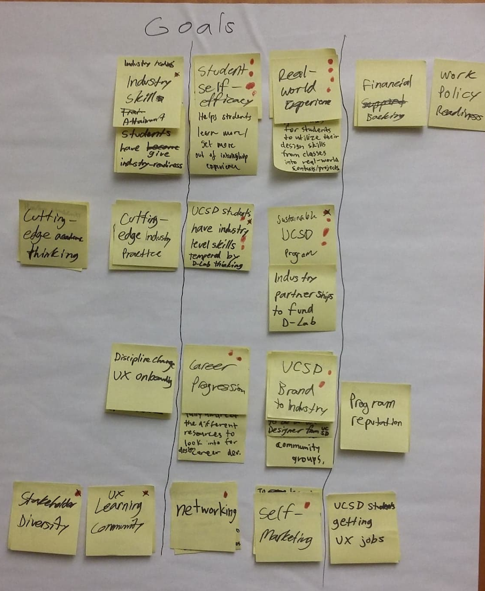
We did another design workshop through a series of dot voting to ideate and sort goals to prioritize from potentially interviewing stakeholders,
and stakeholder recruiting considerations.
Caption yet to be completed.
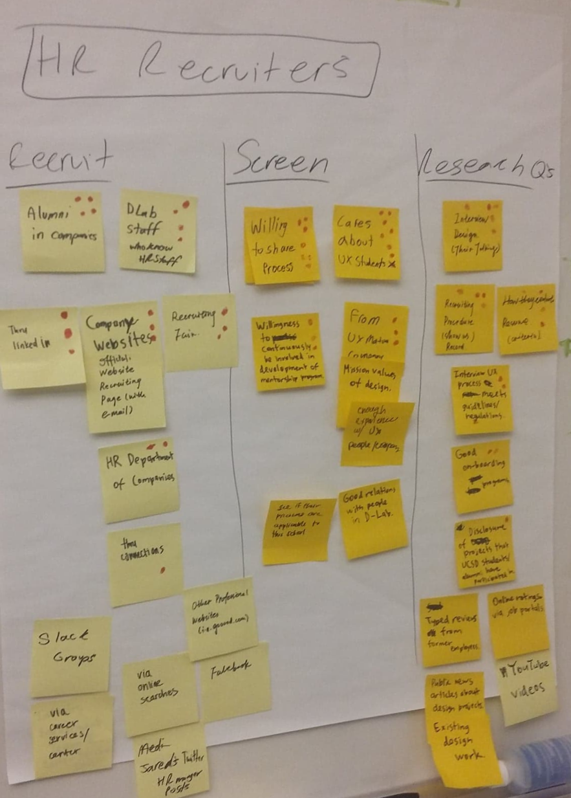
Caption yet to be completed.
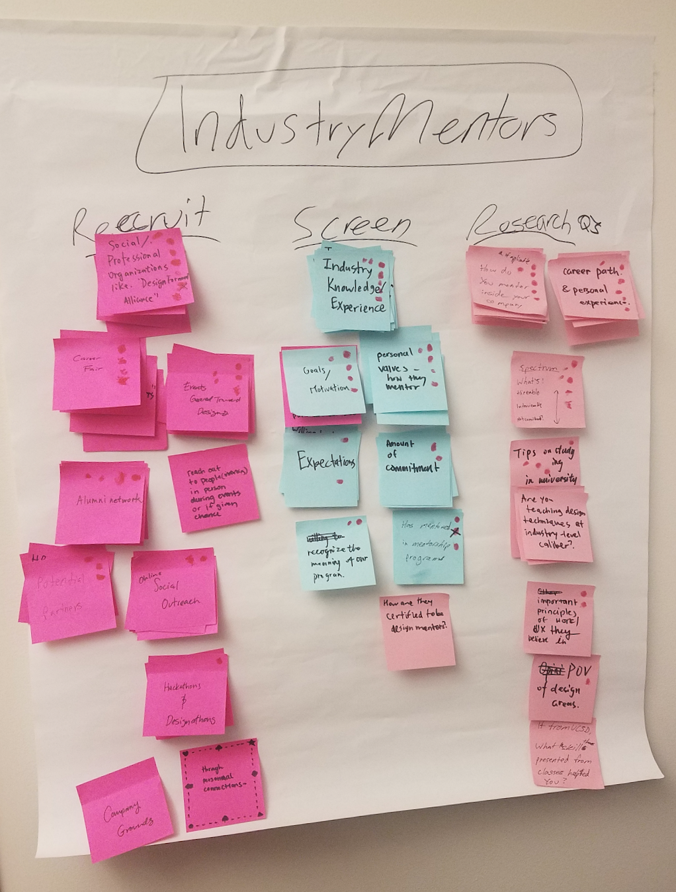
Caption yet to be completed.
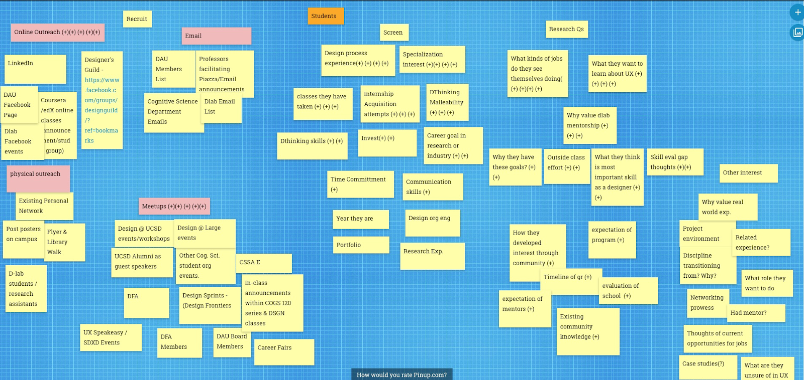
Project Structure
As a result of goals established for the mentorship program and initial strategy of recruiting our most important stakeholders, different
projects were created, which were called briefs. Although we had a somewhat clear direction of our primary research, our progress began
to stifle from the lack of effort placed in the briefs by most of the team. This was reflected when we had to work on an executive
summary for one of the co-directors of the Design Lab to review our progress. Thus, it was imperative that a revamped structure of our
internal group would ensure clear roles and responsibilities as well as to learn from productivity issues from attempts in completing the briefs.
2-Week Design Sprint Structure
This structure was designed to achieve productivity within our growing team by strategizing and executing briefs and having manageable sub-teams emerge based
from personal interests of the topics of each brief. The following includes further explanation of how the 2-week design sprint structure works.
Start of the 2-Week Sprint
The first Saturday of the 2-week sprint introduces a group discussion of what briefs should be introduced and prioritized.
Team members would express interest in working on briefs and consent to work on the brief for the duration of the sprint.
Each brief has a dedicated team that works to accomplish the goals set in the brief.
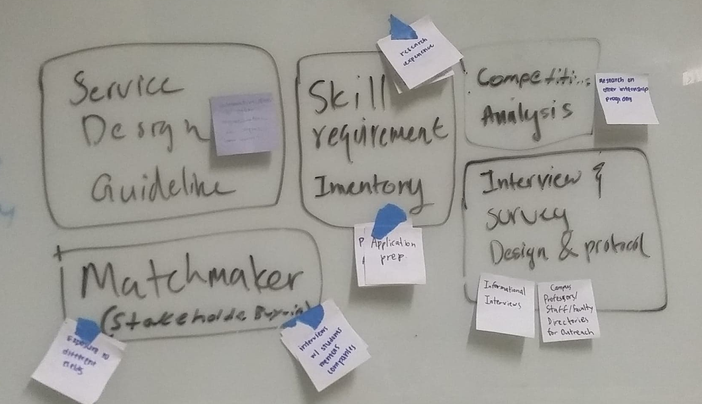
Caption yet to be completed.
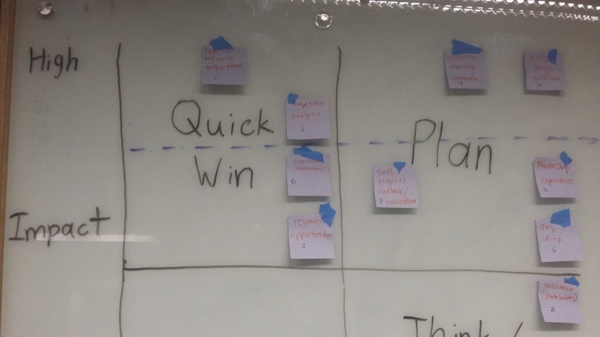
Caption yet to be completed.
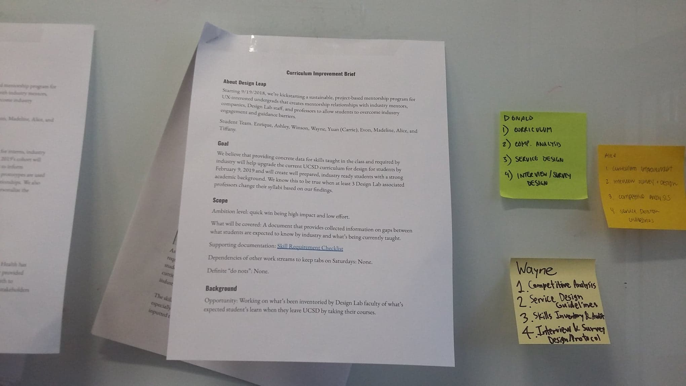
Caption yet to be completed.
First Week
The first week enables team members within each brief to explore the topic of the brief, with a selected individual to
lead and oversee the brief. They would have the freedom to develop their own strategies and tactics that would inform
how the team would want to achieve the goals outlined in their brief.
They would have 1-on-1’s with Enrique and other mentors about the subject matter to have expert knowledge and
recommendations on executing such tactics to the briefs.
The team should work on the brief such that they have made 25-75% of the brief’s goal accomplished. The team
lead would check in with Enrique to update on progress and the team’s direction on their brief.
By the end of the first week, each team would return to the rest of the group to provide updates to their progress
on their briefs and to open the floor for the entire Design Leap group to critique and better align the team
towards executing deliverables for the brief. A new team lead for each brief may or may not be assigned based on
group discretion.
Second Week
The second week focuses on the team, for each brief, to actually accomplish the goals set forth in the brief.
Each team still can access to 1-on-1’s with Enrique and other mentors about the subject matter to aid in the
team’s approach to their brief. Each team lead is still subject to check-ins to ensure updates to the team’s
progress.
End of the 2-Week Sprint
By the end of the second week, each team must present their findings on what they have worked on for their brief.
There would be another critique session of the team’s effort as well as a group reflection of the deliverables
for the team’s brief.
The cycle closes with a new round of the 2 week design sprint, where people participate in new teams for new or
existing briefs would be informed by previous teams’ work on briefs.
Research Work
The briefs that I was involved in were the early conceptions of the interview questions, the competitive analysis of
mentorship programs, and secondary research on UX/Design portfolios.
Interview Questions
My participation within this brief was 3-4 months before the re-structure of Design Leap and when I was only
working with 4 other members in the team. Amongst my team during that time, we proceeded to digitize our
brainstorming process and ideated a bunch of questions to consider asking for alumni involved in UX/Design,
industry readiness, and mentorship using Google Forms to generate and dot vote the questions amongst ourselves.
We did the same for student clubs, industry mentors, and the rest of the stakeholders.
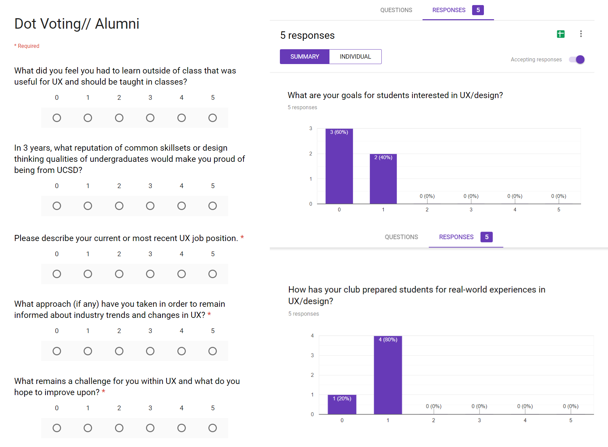
Caption yet to be completed.
Once we established the votes for each and every question for each stakeholder, we proceeded to have a group
discussion about the importance of each of the questions and changed the number of votes accordingly for each
question after every discussion. The questions varied from each stakeholder, but place most relevance to industry
readiness, mentorship program experience, and their experiences with UX/Design.
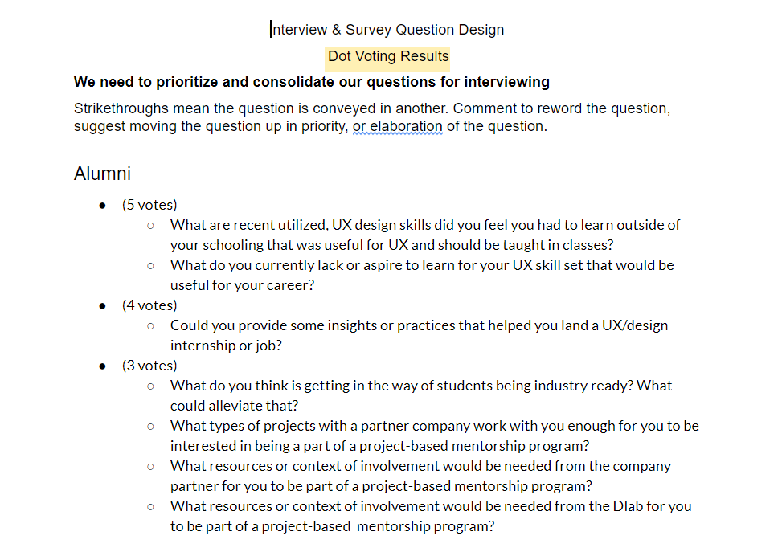
Caption yet to be completed.
These questions have been iterated, re-evaluated, and continuously groomed for months at a time from other team members
who took the reins of this project, especially during the first 3-4 months. This was because there was much disapproval
from primary stakeholders of our primary research, so the brief was handed off to other students members in our team
who had to comb through the questions again.
Competitive Analysis of Mentorship Programs
It was also important to understand how existing mentorship programs have been structured in general to inform the
general structure of the mentorship program that Design Leap wanted to create. The initial scaffolding of the
spreadsheet to organize this information was from Enrique, who helped to break down what aspects of a mentorship
program to investigate.
During the 2-week design sprint, my teammates and I were able to gather information from various websites that
highlighted academic programs, mentorship programs, and incubators. From this, we were able to understand
eligibility requirements for people to join and retain admission within the program as well as how the mentorship
programs were structured to fulfill organizational goals and the experiences students wanted to gain from the programs.
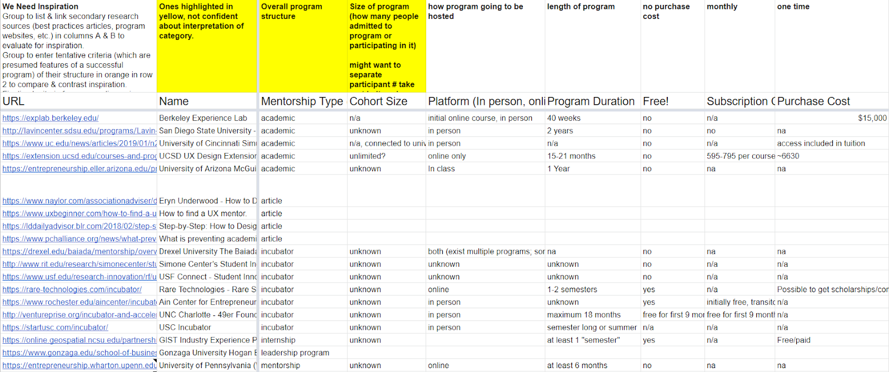
Caption yet to be completed.
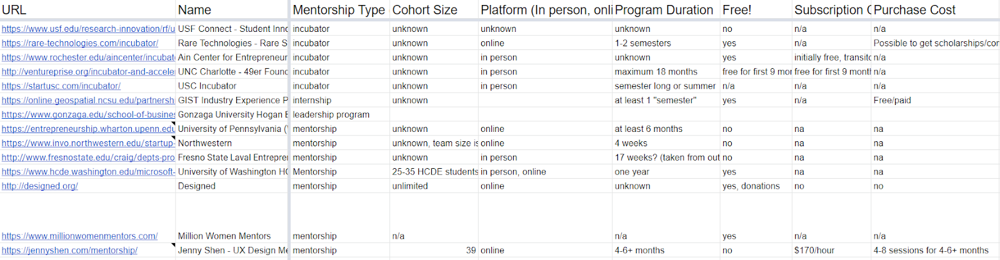
Caption yet to be completed.
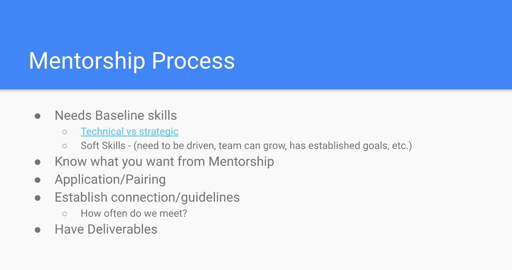
Caption yet to be completed.
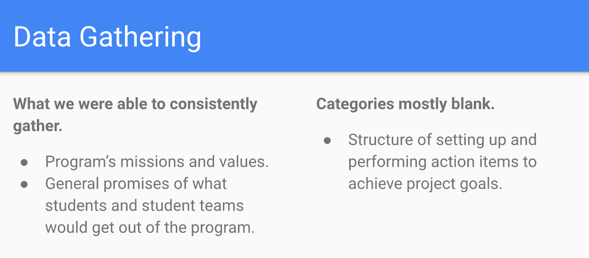
Caption yet to be completed.
UX/Design Portfolio Maker
Enrique also laid the foundation for what are resources and notes to look into when curating a UX/Design Portfolio, such
as a constantly iterative template for establishing the content and visuals of a UX case study. A temporary member of the
team, Annika, and I were able to come up with a rough scaffolding of how to structure the content for case studies,
generate notes from found footage of portfolio reviews by actual recruiters, and gather data from various UX/Design
resources and articles that informed a person’s approach to generating their portfolio.
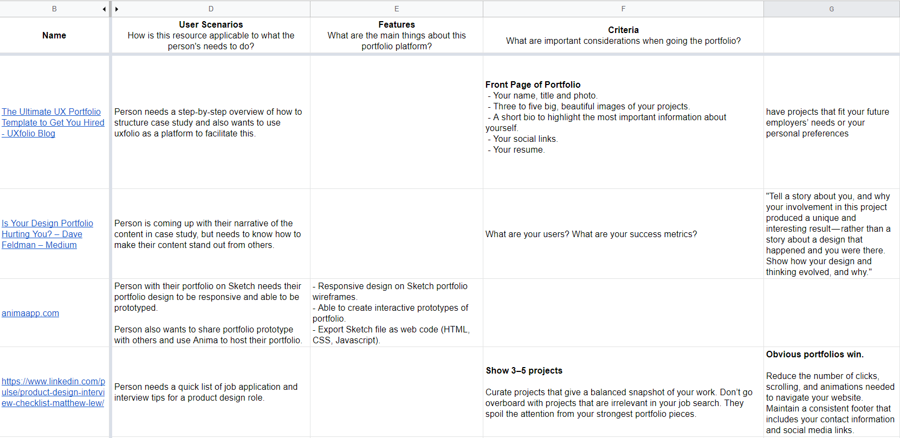
Caption yet to be completed.
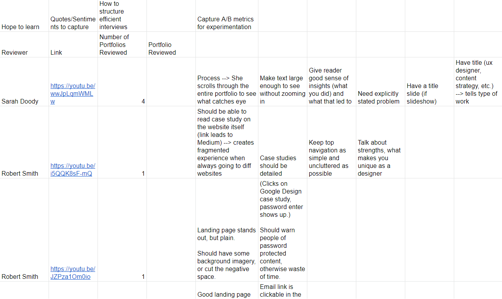
Caption yet to be completed.
This was to de-codify what it means for students to have an important aspect of their application materials (their portfolios)
evaluated and what recruiters seek to look for in students/alumni. Along the way, Annika and I consulted Enrique to ask lingering
questions about approaches to the Portfolio brief (officially dubbed “Portfolio maker”).
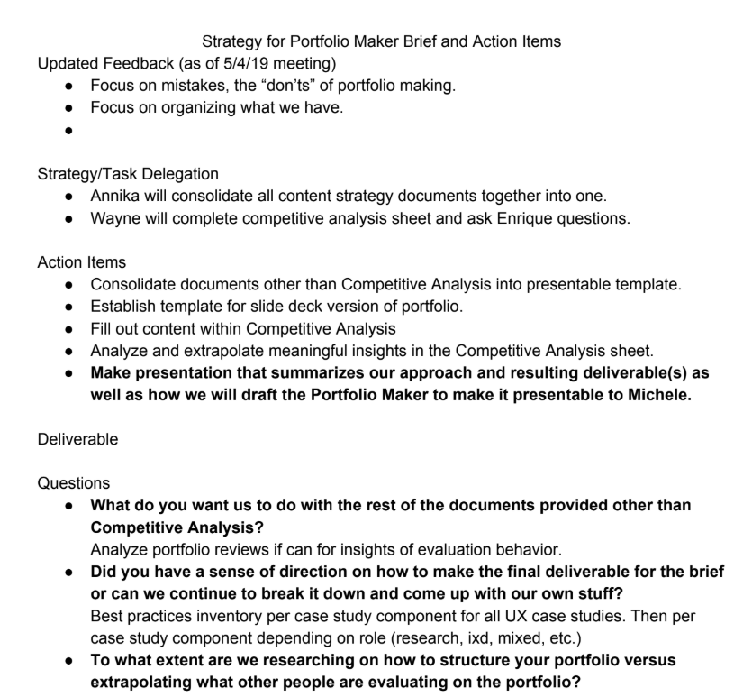
Caption yet to be completed.
Within the 2 weeks that we had, we came up with a presentation slide deck that summarized our findings and insights.
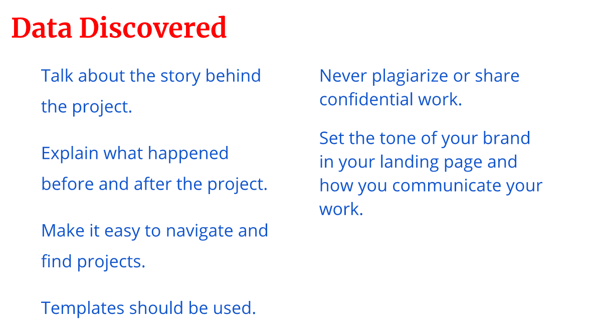
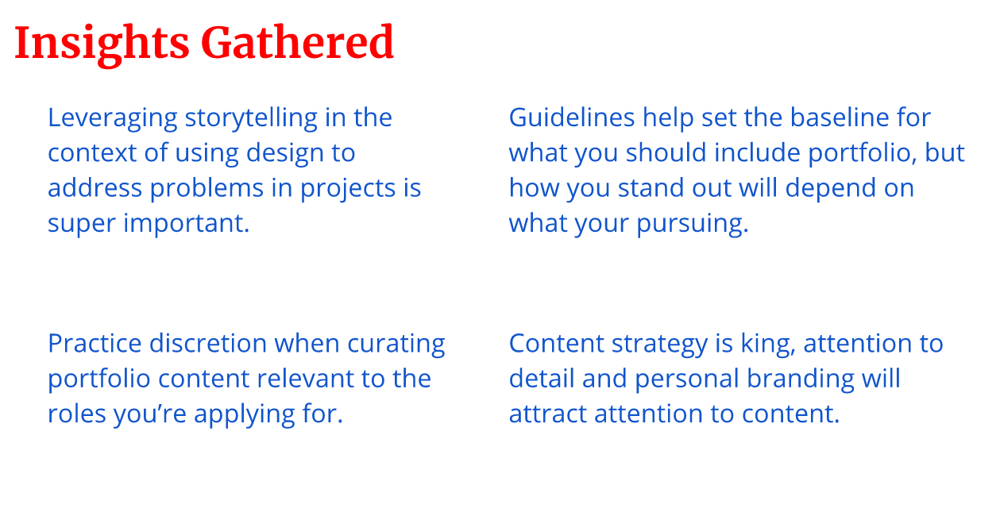
Caption yet to be completed.
Results
Most of our group’s efforts in the briefs were compiled into a report as well as a slide deck for a key representative to
have the Design Lab’s support and approval of the officiation of our group, but such work is highly confidential.
Reflection
I have a greater appreciation for having a lifelong understanding of the state of UX/Design industry, as it truly makes me wonder
about how to help people get to their next steps in their UX/design careers. With lots of unforeseen barriers and difficulties that
so many students and alumni from our university faced trying to be a part of the UX industry, it was quite a loaded problem for me to consider.
Within the scope of the problems that service design typically tackles, there are no shortcuts to solving core problems as they can be large,
complex, time-consuming, and involve multiple moving pieces and actors. Being able to sense the scope of the problem, not excluding any
important contributors to the problems, asking questions, being self-critical, and other important skills and virtues would all need to be
utilized to truly crack down and resolve such core problems.
Project management, project sustainability, and UX strategy should never be underestimated, yet they can be difficult to harness and pinned
down without adequate support and sufficient work accomplished from teammates and stakeholders alike to ensure short-term wins and the
eventual success of a project.